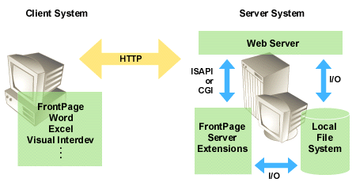

|
| ||
|
| ||
Microsoft Corporation
Updated April 15, 1999
The FrontPage client system communicates with a Web server via WinSock and TCP/IP. Wizards and custom applications on the client computer communicate with the FrontPage client using OLE automation.

The FrontPage client communicates with the server extensions using HTTP, the same protocol Web browsers and Web servers use to communicate. FrontPage implements a remote procedure call mechanism on top of the HTTP POST request, so that the FrontPage client can request documents, update the Tasks list, add new authors, and so on.
The Web server sees POST requests addressed to the server extensions Common Gateway Interface (CGI) programs and directs those requests accordingly. FrontPage correctly communicates between client and server through proxy servers (firewalls).
Note FrontPage does not use the HTTP PUT request. As described in the HTTP specification, PUT sends a document to a Web server; however, few Web servers implement PUT. Therefore, the FrontPage client uses the universally implemented HTTP POST request for all communication with the server extensions.
For most Web servers, the FrontPage Server Extensions are accessed from the Web server using the Common Gateway Interface (CGI), the universal Web server extension mechanism. The implementation of CGI differs somewhat among Web servers and platforms. For example, most UNIX Web servers invoke a CGI extension by running it in a separate process, whereas Microsoft IIS on Windows NT supports Internet Server Applications Program Interface (ISAPI), a CGI-style communication interface that incurs less overhead.
Did you find this material useful? Gripes? Compliments? Suggestions for other articles? Write us!
© 1999 Microsoft Corporation. All rights reserved. Terms of use.